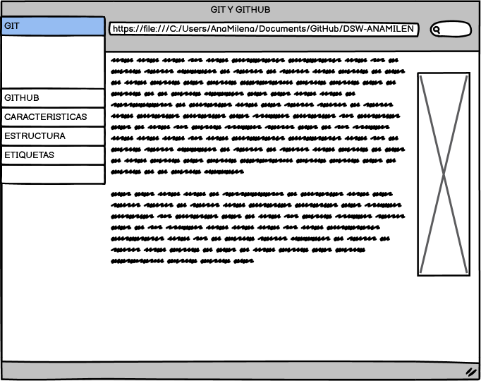

GIT Y GITHUB
Objetivo General
Controlar los cambios en el desarrollo de cualquier tipo de software, permitiendo conocer el estado actual de un proyecto, los cambios que se le han realizado a cualquiera de sus piezas y de las personas que intervinieron en ellas.
Objetivos especificos
- Guardar el historial de cambios sobre el còdigo de un proyecto.
- Permitir a varias personas contribuir simultaneamente sobre un mismo proyecto.
- Restaurar versiones antiguas
- Fusionar cambios entre distintas versiones
Materiales
Maquetacion
Contenido
Los sistemas de control de versiones son programas que tienen como objetivo controlar los cambios en el desarrollo de cualquier tipo de software, permitiendo conocer el estado actual de un proyecto, los cambios que se le han realizado a cualquiera de sus piezas, las personas que intervinieron en ella etc.
Nos ayudan en muchos ambitos profesionales como podrian ser:
- Comparar el còdigo de un archivo, de modo que podamos ver las diferencias entre versiones.
- Restaurar versiones antiguas.
- Fusionar cambios entre distintas versiones.
- Trabajar con distintas ramas de un proyecto, por ejemplo de la producciòn y el desarrollo.
Sobre GIT
Git es un sistema de control de versiones de codigo abierto, relativamente nuevo que nos ofrece las mejores caracteristicas en la actualidad, pero sin perder la sencillez y que apartir de entonces no ha parado de crecer y ser mas utilizado por desarrolladores en el mundo. Git es una multiplataforma, por lo que puedes usarlo y crear repositorios locales en todos en todos los sistemas operativos mas comunes, como Windows,Linux o Mac.
Sobre GITHUB
GITHUB es un servicio para el alojamiento de repositorios de software gestionados por el sistema de control de versiones Git. Por tanto Git es algo mas general que nos sirve para controlar el estado de un desarrollo a lo largo del tiempo, mientras que GITHUB es algo mas particular: un sitio Web que usa GIT para ofrecer a la comunidad de desarrolladores repositorios de software. En definitiva, GITHUB es un sitio Web pensado para hacer posible el compartir el codigo de una manera mas facil y al mismo tiempo darle popularidad a la herramienta de control de versiones en si, que es GIT.
Conclusion
Se puede concluir que GIT y GITHUB, son herramientas fundamentales para el proceso de desarrollo de un proyecto o producto. Como hemos visto podemos usar otras alternativas pero no debemos de suprimir estas herramientas que nos ayudaran a una mejor gestion del codigo.